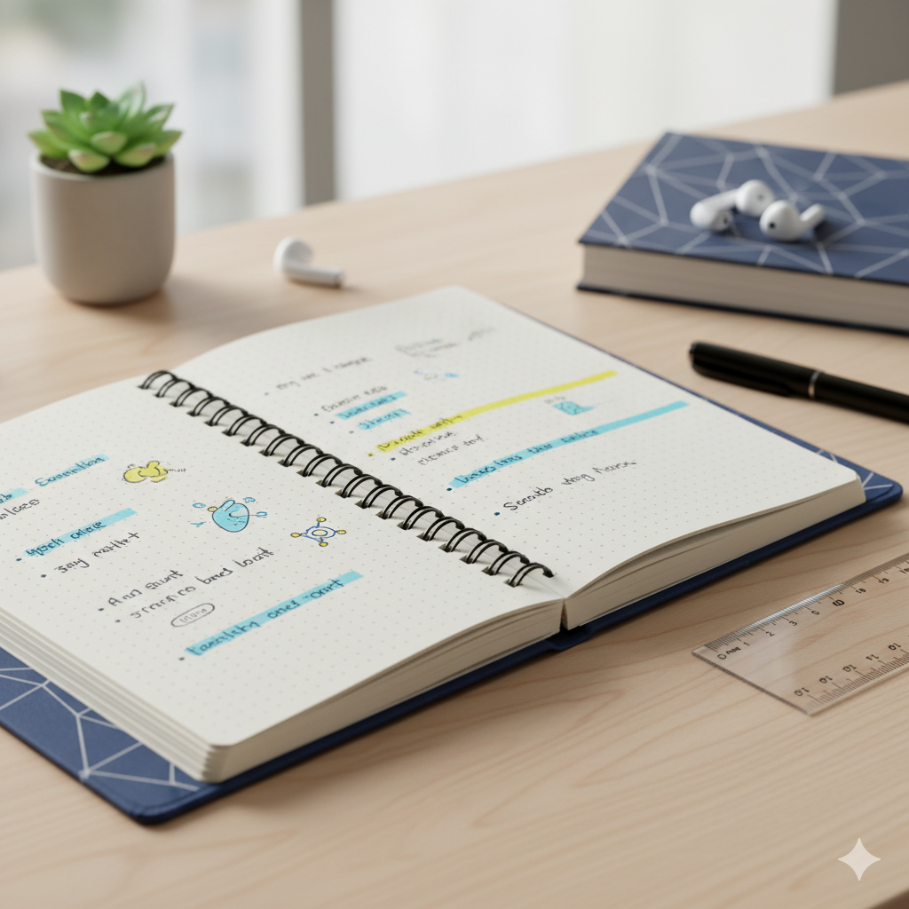

1. 도입: 신뢰할 수 있는 정보를 찾는 가장 똑똑한 방법
방대한 정보의 바다 속에서 여러분은 어떤 기준으로 자료를 찾으시나요? 직접 수집하고 검증하는 과정이 때로는 너무 버겁게 느껴지지는 않으셨나요? 특히 출처가 불분명한 정보들이 넘쳐나는 생성형 AI 시대에는 ’무엇을 믿을 것인가’가 가장 큰 고민입니다.
만약 구글의 정교한 AI 기술과 세계적인 전문가들의 통찰이 미리 결합된 ’황금 지식 베이스’가 나에게 준비되어 있다면 어떨까요? 구글 NotebookLM이 새롭게 선보인 ‘추천 노트북(Featured Notebooks)’ 기능은 바로 이러한 질문에서 시작되었습니다. 이제 우리는 자료를 찾는 수고를 덜고, 곧바로 깊이 있는 통찰을 얻는 단계로 나아갈 수 있게 되었습니다.
현대적인 디지털 도서관 환경에서 AI 가이드와 함께 수많은 지식의 보고를 탐험하는 모습
2. 핵심 요약: 추천 노트북이 선사하는 3가지 변화
이번 업데이트의 핵심은 단순히 자료를 제공하는 것을 넘어, ‘검증된 지식의 활용’에 초점을 맞추고 있습니다.
- 전문가의 큐레이션: 저명한 작가, 연구자, 신뢰도 높은 출판사(The Economist 등)와 협력하여 엄선된 고품질 소스가 미리 로드되어 있습니다. 이는 사용자가 소스의 신뢰성을 고민할 필요 없이 곧바로 핵심 질문에 집중하게 합니다.
- 시그니처 기능의 극대화: NotebookLM의 강력한 기능인 ’오디오 오버뷰(팟캐스트)’는 이제 전문가의 깊이 있는 텍스트를 생동감 넘치는 대화형 오디오로 변환해 줍니다. 또한 복잡한 전문가의 논리 구조를 ’마인드 맵’을 통해 시각적으로 한눈에 파악할 수 있습니다.
- 정보 탐색의 표준 제시: 추천 노트북은 단순히 콘텐츠를 소비하는 곳이 아닙니다. 전문가들이 어떻게 자료를 분류하고, AI에게 어떤 질문을 던져 가치 있는 답변을 얻어내는지 보여주는 ’AI 리터러시’의 훌륭한 교본 역할을 합니다.
팟캐스트 파형, 지식 그래프, AI 채팅 인터페이스가 조화롭게 결합된 모습
3. 상세 설명: 전문가의 통찰을 내 것으로 만드는 경험
추천 노트북은 단순한 읽기 자료가 아닙니다. 사용자는 이미 준비된 ‘지식의 보고’ 안에서 다양한 방식으로 정보를 탐험할 수 있습니다.
신뢰할 수 있는 파트너들의 실전 사례
현재 제공되는 추천 노트북들은 단순히 정보를 나열하는 수준을 넘어, 각 분야의 심층적인 탐구를 가능하게 합니다. * 미래 예측: 《이코노미스트》의 ‘2025 전망’ 노트북은 복잡한 국제 정세와 경제 지표들을 AI가 분석하기 좋게 구조화해 두었습니다. 사용자는 2025년의 핵심 트렌드에 대해 꼬리에 꼬리를 무는 질문을 던질 수 있습니다. * 건강과 장수: 에릭 토폴(Eric Topol) 박사의 최신 연구 결과들을 바탕으로, 개인의 건강 고민에 대해 과학적 근거를 기반으로 한 AI의 맞춤형 가이드를 받을 수 있습니다. * 고전과 교육: 윌리엄 셰익스피어 전집 노트북은 수만 페이지에 달하는 텍스트를 관통하는 주제 의식을 AI가 순식간에 연결해 줍니다. 예를 들어, 서로 다른 작품에 나타난 ’복수’라는 키워드를 비교 분석하는 일이 쉬워집니다.
’읽기 전용’이 주는 신뢰성
추천 노트북은 사용자가 임의로 소스를 수정할 수 없는 ‘읽기 전용’으로 제공됩니다. 이는 정보의 왜곡이나 오염 없이 전문가가 의도한 데이터의 무결성을 유지하기 위함입니다. 사용자는 이 견고한 기반 위에서 자신만의 질문을 던지고, AI가 생성한 통찰을 별도의 노트(아티팩트)로 저장하며 자신만의 지식 체계를 구축할 수 있습니다.
셰익스피어부터 경제, 자연 과학까지 다양한 지식의 파편들이 유기적으로 연결된 모습
4. 마무리: AI가 지식의 길잡이가 되는 미래
NotebookLM의 추천 노트북 기능은 AI의 역할이 단순한 ’검색 도구’에서 ‘지식의 큐레이터이자 분석가’로 진화하고 있음을 보여줍니다. 우리가 직접 모든 정보를 검증할 필요 없이, 신뢰할 수 있는 소스 위에서 AI와 함께 깊이 있게 대화하는 방식은 앞으로 지식 노동의 패러다임을 바꿀 것입니다.
누구나 전문가의 도서관에 접근할 수 있게 된 지금, 중요한 것은 ’어떤 자료를 가졌는가’가 아니라 ‘어떤 질문을 던져 어떤 가치를 끌어낼 것인가’입니다. 지금 바로 NotebookLM의 홈 화면에서 추천 노트북을 열고, 여러분만의 새로운 통찰을 발견해 보세요.
지식의 핵심을 향해 나아가는 빛의 길과 AI가 안내하는 미래의 탐색 경험